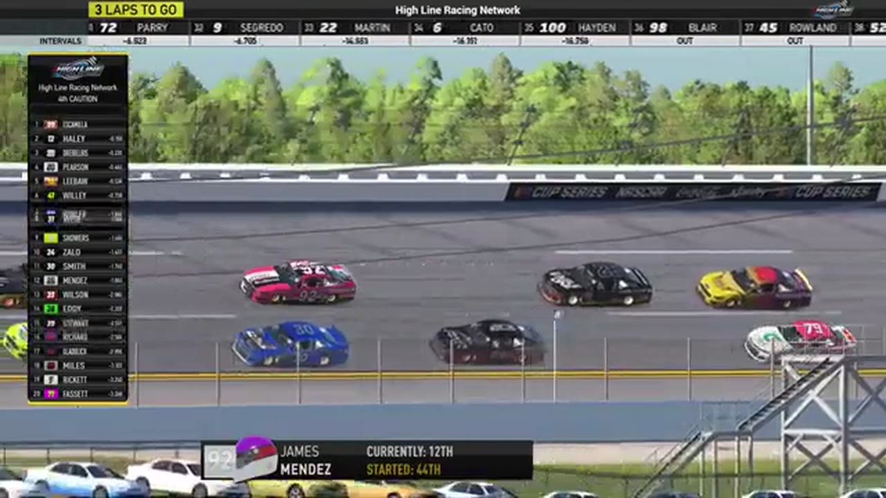

James Mendez
Team assignment not stated in the structured owner record.
A PODIUM FILE WITH AN OPEN RESULT HORIZON
- Official files
- 1
- Central editions
- 0
- Exact tape cues
- 2
- Accepted podiums
- 1
James Mendez has 1 position-specific top-three receipt: S1 R8 at Talladega (P3). No feature win is currently supported in the accepted result ledger. A consistently stated team affiliation remains open for owner review. The currently indexed source date is January 5, 2026.
The official tape index connects the name to 1 race file, 0 Central editions, and 2 primary-broadcast navigation cues. The densest direct-tape categories are postrace (1 cue) and result (1 cue). Those counts describe where the name is easiest to find; they are not fault, pace, or performance grades. A source-attributed car frame is published with its original video and timestamp. That is the current discovery map for James Mendez.
That is enough for a real result dossier without pretending the archive knows every start or finish. Owner classifications can extend the record later through the same stable race IDs. No Highline Live bonus file is currently attached to this identity. The displayed name is labeled broadcast lower third confirmed; that status remains visible so an owner roster can strengthen or correct the identity without rewriting the evidence trail. Those boundaries define James Mendez's public HLRN file.
2 featured race-tape cues
These are discovery routes into complete HLRN broadcasts, not performance grades or inferred results.
- S1 / R8 · RESULT
Juan Escamilla is confirmed atop the Talladega results
The primary Talladega results readout records Juan Escamilla first, Justin Lee Pearson second, and James Mendez third after the photo finish.
Talladega - S1 / R8 · POSTRACE
Juan Escamilla and Justin Lee Pearson anchor the Talladega post-race result review
S1 / R8 at 2:07:13: The reviewed live-race close has passed before this Talladega result booth review begins with Juan Escamilla, Justin Lee Pearson, James Mendez, and Scott Wise named in the discussion. It remains post-race context, not a new incident, stage, strategy call, finish, or result receipt.
Talladega
Verified team history is not consistently stated. Complete starts, finishes, and points remain open beyond the recovered results. The public spelling has broadcast identity support; an owner roster can still add legal-name, number, and team-history detail.